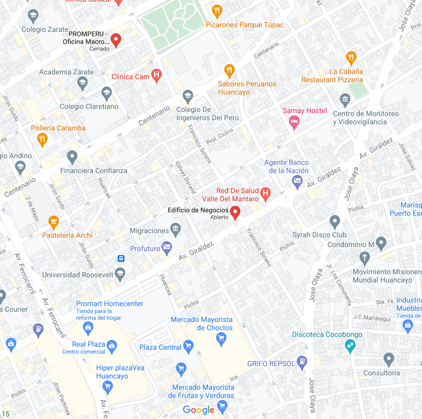

Alexis Acuña Javier
"Técnico de Ingenieria de Software"
ESTUDIOS
-
2007 - 2013
Educación primaria
I.E 'Santa Isabel - Huancayo'
-
2014 - 2019
Educación secundaria
I.E 'Santa Isabel - Huancayo'
-
2021 - 2023
Educación superior
"Senati - Huancayo"
IDIOMAS
- Español
- Ingles
CONTACTOS
- +51 966 696 275
- alexisjhover@gmail.com
- Programador X
- AlexisJavier28
- Av. Santivañez N° 320 - Huancayo
OFICINA
PERFIL
Programador y desarrollador con más de una década de experiencia en la creación de código y software bancario. Participé en el programa de desarrollo del portal web de BBVA, que recibe aproximadamente 1 millón de visitas día tras día. Fui el encargado de optimizar el portal, reducir los errores de carga a un 5% y aumentar la retención de tráfico en un 20%. Trabajo con responsabilidad, eficacia y dedicación en todo lo que hago.
EXPERIENCIAS
Agosto 2021 -
Abril 2022
Enero 2022 –
Noviembre 2023
Desarrollador web
HABILIDADES
Marzo 2021 –
Diciembre 2023
PÁGINAS WEB
CERTIFICADOS
Mayo 2021 –
Agosto 2021
Certificado de finalización del curso
© Desarrollado por A L E X I S | Actualizado en noviembre del 2021